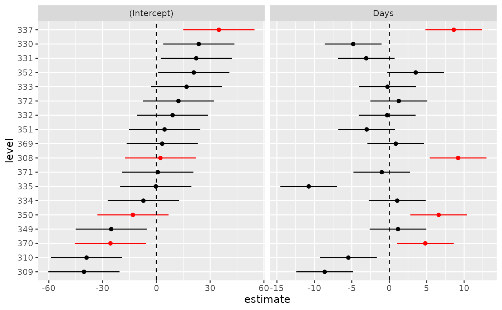

Augmentation for random effects (for caterpillar plots etc.)
Source:R/lme4_tidiers.R
augment.ranef.mer.RdAugmentation for random effects (for caterpillar plots etc.)
Usage
# S3 method for ranef.mer
augment(x, ci.level = 0.9, reorder = TRUE, order.var = 1, ...)Arguments
- x
ranef (conditional mode) information from an lme4 fit, using
ranef(.,condVar=TRUE)- ci.level
level for confidence intervals
- reorder
reorder levels by conditional mode values?
- order.var
numeric or character: which variable to use for ordering levels?
- ...
additional arguments (unused: for generic consistency)
Examples
if (require("lme4")) {
load(system.file("extdata","lme4_example.rda",package="broom.mixed"))
rr <- ranef(lmm1,condVar=TRUE)
aa <- broom::augment(rr)
## Q-Q plot:
if (require(ggplot2) && require(dplyr)) {
g0 <- ggplot(aa,aes(estimate,qq,xmin=lb,xmax=ub))+
geom_errorbarh(height=0)+
geom_point()+facet_wrap(~variable,scale="free_x")
## regular caterpillar plot:
g1 <- ggplot(aa,aes(estimate,level,xmin=lb,xmax=ub))+
geom_errorbarh(height=0)+
geom_vline(xintercept=0,lty=2)+
geom_point()+facet_wrap(~variable,scale="free_x")
## emphasize extreme values
aa2 <- group_by(aa,grp,level)
aa3 <- mutate(aa2, keep=any(estimate/std.error>2))
## Update caterpillar plot with extreme levels highlighted
## (highlight all groups with *either* extreme intercept *or*
## extreme slope)
ggplot(aa3, aes(estimate,level,xmin=lb,xmax=ub,colour=factor(keep)))+
geom_errorbarh(height=0)+
geom_vline(xintercept=0,lty=2)+
geom_point()+facet_wrap(~variable,scale="free_x")+
scale_colour_manual(values=c("black","red"), guide=FALSE)
}
}
#> Loading required package: lme4
#> Loading required package: Matrix
#> Loading required package: ggplot2
#> Loading required package: dplyr
#>
#> Attaching package: ‘dplyr’
#> The following objects are masked from ‘package:stats’:
#>
#> filter, lag
#> The following objects are masked from ‘package:base’:
#>
#> intersect, setdiff, setequal, union
#> Warning: It is deprecated to specify `guide = FALSE` to remove a guide. Please use `guide = "none"` instead.
